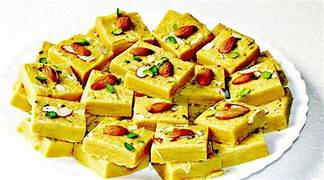

Gulab Jammun
Ingredients
- 50 gm paneer
- 2 cup canola oil/ rapeseed oil
- 500 ml boiling water
- 1 slice lemon
- 2 cup powdered sugar
- 11/2 teaspoon powdered green cardamom
- 150 gm mashed khoya
Recipe
- Prepare the sugar syrup.
- Make the dough for Gulab Jamun.
- Shape the dough in small balls.
- Soak the fried balls in Gulab Jamun

Soan Papdi
Ingredients
- 11/4 cup Gram flour (besan)
- 250 gm ghee
- 11/2 cup Water
- 1 teaspoon crushed lightly green cardamom
- 11/4 cup all purpose flour
- 21/2 cup sugar
- 1/2 cup milk
Recipe
- Sift the flours together.
- Add flour mixture to the pan and roast on low flame.
- Prepare syrup simultaneously..
- Pour into a greased surface or thali and roll to 1inch thickness lightly
